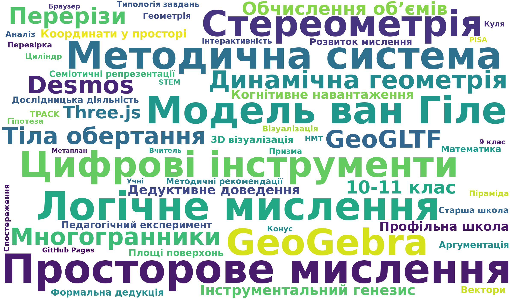

Хмара слів
Термінологічне поле дослідження
Методична система спирається на три цифрові інструменти: GeoGLTF, GeoGebra та Desmos. Теоретичну основу утворюють модель ван Гіле, когнітивне навантаження, семіотичні репрезентації Дюваля та інструментальний генезис.
Відкрити зображення у новій вкладці